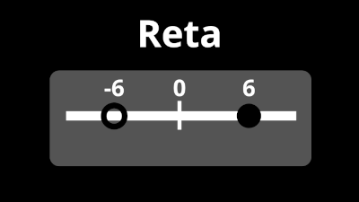
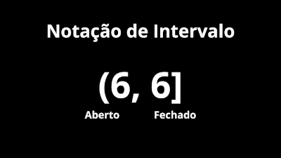
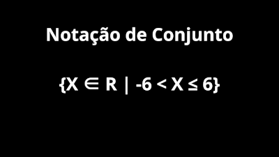

Intervalos Reais
Um intervalo, na matemática, é uma forma de representar números entre outros números, por exemplo: entre o 2 e o 3 há infinitos números com infinitas casas após a vírgula. Normalmente usamos uma reta para representar um intervalo, porém, ele pode ser representado por parênteses e colchetes (notação de intervalo), além de notação de conjunto.
Tipos de Representação

A representação em reta é a mais usual dentre as outras, nela temos os números e logo abaixo um círculo que pode ser tanto preenchido como vazado. Caso o circulo seja vazado significa que a reta vai até aquele número, sem o contabilizar, no exemplo ao lado podemos notar que o circulo do -6 está vazado, ou seja, a reta vai até o -5,99999..., mas nunca contanto o 6. Já o circulo preenchido significa que a reta vai até o número contanto o número da reta, por exemplo, na reta ao lado o número vai passar do 5,999... e ir até o 6, para assim completar a reta.

A representação pela notação de intervalo é a mais fácil de todas, utilizamos um parênteses para representar um intervalo aberto, ou seja, que não contabiliza o número da reta. Oposto a isso os colchetes significam um intervalo fechado, ou seja, que ocntabiliza o número da reta.

A representação por meio de notação de conjunto parece ser a mais difícil de todas, porém ela é bem mais fácil do que parece. A parte X ∈ R | nunca muda, pois ela significa que o nosso número da reta é real. Já a outra parte serve para identificar o número e se o intervalo é aberto ou fechado. Os intervalos abertos são representados por um < ou >. Já os fechados são representados por ≤ e ≥.